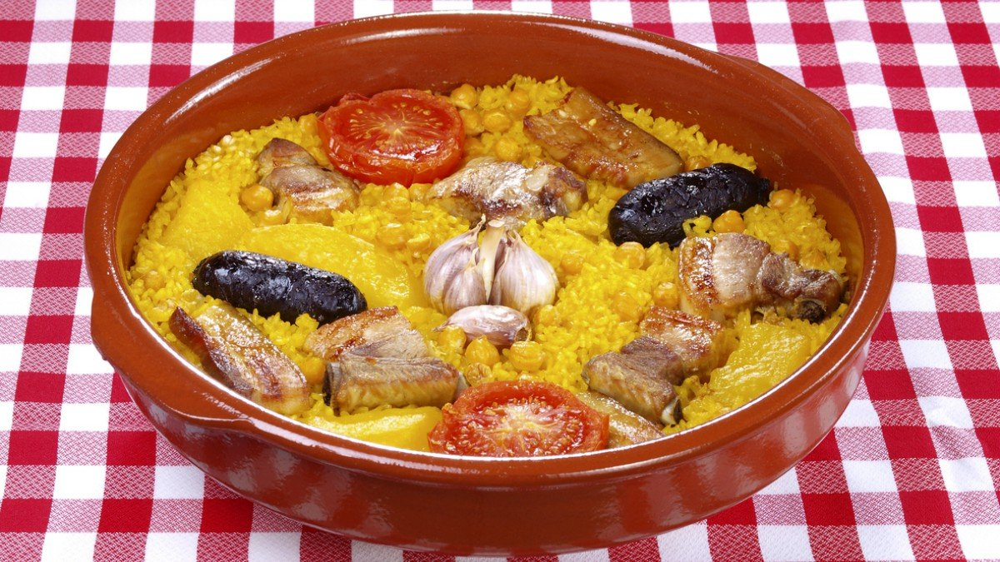
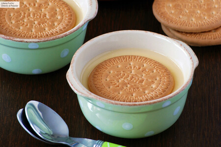
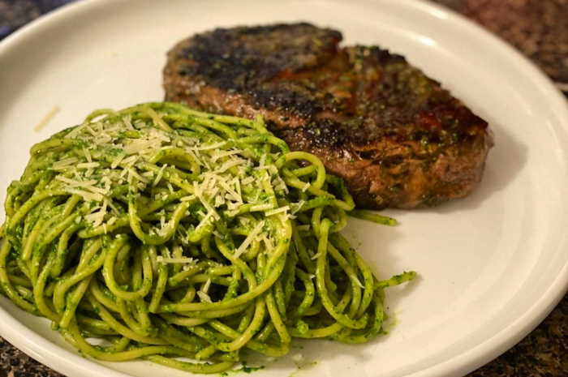

Arroz al horno
El popular y tradicional arroz al horno valenciano
Ver la receta
El popular y tradicional arroz al horno valenciano
Ver la receta
Las natillas caseras de la abuela de toda la vida.
Ver la receta
Los típicos tallarines al pesto, pero al estilo peruano.
Ver la receta